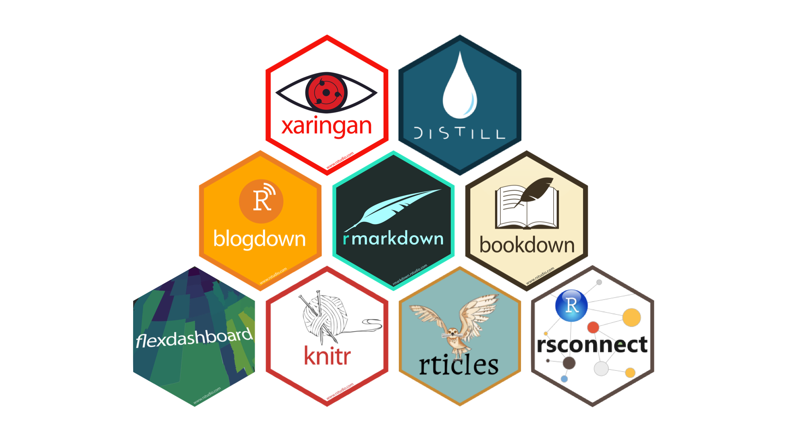

Welcome to STAT 331 / 531!
Week 1 Day 1
Thursday, September 18
Today we will…
- Introduce STAT 331 (15-minutes)
- Introductions (Me + You)
- Course Layout
- Group collaboration activity (20-minutes)
- Connection to Dr. T’s research
- Break (10-minutes)
- Review of Quarto (20-minutes)
- Set-up Lab 1 (15-minutes)
- Lab 1 Work Session
Introductions
Hi, I’m Dr. Theobold!
I am originally from Colorado, but went to grad school in Montana.
My favorite things are being outside, drinking coffee, and watching women’s basketball.
I love cats!
I’ve been programming in R since 2014, and I learned Python last year.
I absolutely love teaching this course!

On a personal note…
I prefer you refer to me as “Dr. Theobold”, or “Dr. T”, or “Professor Theobold.”
Please don’t call me “Allison” or “Professor.”
I use they / them pronouns. If you are not sure what this means, I‚Äôd encourage you to read more about gender identity and pronouns. üôÇ

Our Classroom Learning Assistant!
On Tuesdays, we will be joined in class by Jasmine.
Jasmine is…
- a Statistics master’s student,
- originally from Irvine, CA,
- someone who loves sushi, hanging out with friends, watching Netflix, and working out.
You!
I am looking forward to reading your introductions on Discord!
Introduce yourself to the people at your table (or the table next to you)!
Course Layout
Beginning of the Week
- Look over the coursework page
- Read the required chapter(s)
- Watch the required video(s)
- Complete the Preview Activities by 8am
- Discuss example analyses
- Ask clarifying questions
- Work in pairs to complete the Practice Activity
- Finish whatever remains of the Practice Activity
- Complete any additional reading / videos / Preview Activities
End of the Week
- Debrief Practice Activity
- Discuss ways to extend that week’s skills
- Start Lab Assignment
- Finish remaining problems of the Lab Assignment
- Complete Challenge Assignment
Labs & Challenges Due Monday by 5pm
To keep everyone on track with the coursework, your Lab and Challenges are due by 5pm every Monday. You are permitted to request up to three (3) deadline extensions by filling out the deadline extension Google form linked on Canvas.
What does “ungrading” mean?
“Ungrading is a pedagogical practice which entirely removes grades as a focus of the course. Instead, ungrading exclusively focuses on providing students with feedback aimed at helping them build proficiency to accomplish the course’s learning goals.”
How does this system work?
- Each problem on an assignment is marked for proficiency (e.g., success, growing).
- These marks are not attached to a grade outcome (e.g., A, B, C, D).
- Grades are defined from a set of criteria, co-developed between you and me.
- At the end of the course, you propose the grade you believe you’ve earned based on a portfolio of your work and the criteria we established.
Group Collaboration Activity
Broken Circles
To set the stage for your future group collaborations, we will complete an activity that explores how working in groups can be more or less successful.
Let’s start by dividing the class into groups of 6 students.
Activity Guidelines
- No talking or other noises!
- No pointing or hand signals!
- No taking pieces. You may only give pieces to others.
Your group is finished once everyone has a complete circle.
How did that feel?
What did you notice about how your group worked together?
What kinds of things helped your group finish?
Collaboration Skills
Sometimes, you had to give away a piece without knowing if you’d get what you needed in return. What was that like?
What helped you trust your teammates in those moments?
Was there a time when you gave up something you needed because you saw someone else needed it more? Why did you make that choice?
What would have happened if everyone only thought about themselves?
Groupworthy Data Science
Groupworthy Data Science
The purpose of the study is to understand how an instructor’s pedagogy impacts how pairs of students collaborate during pair programming activities.
Why pair programming?
Pair programming helps you practice explaining your thinking to someone, a practice that is linked to increased learning.
In the age of AI, “soft skills have become just as essential as technical expertise—if not more so.”
| Clear Communication |
| Problem-solving |
| Effective Collaboration |
| Leadership |
| Interpersonal Relationship |
Consent to Participate
If you agree to participate…
you will be recorded once a week for 8-weeks while participating in pair programming to complete collaborative tasks.
you will complete a pre- and post-survey about your prior computing experiences and your attitudes toward data science.
Your participation in this research will not affect your course grade.
Consent Form (Linked on Canvas)
Please complete the consent form (https://forms.gle/oax73hoe7uRSVLYw8) by Monday, September 22nd.
10-minute Break
Scripts + Notebooks
Scripts
(File > New File > R Script) are files of code that are meant to be run on their own.
Notebooks
allow you to integrate code, output, text, images, etc. into a single document (e.g., Quarto documents, RMarkdown documents, Jupyter notebooks).
Important
In this class, we will not be using R scripts. There are specific cases where scripts are preferred, which is covered in STAT 541 (in the spring!).
What is Quarto?
Quarto unifies and extends the RMarkdown ecosystem.
Quarto files have the .qmd extension.
Highlights of Quarto
Consistent implementation of attractive and handy features across outputs:
- E.g., tabsets, code-folding, syntax highlighting, etc.
More accessible defaults and better support for accessibility.
Guardrails that are helpful when learning:
- E.g., YAML completion, informative syntax errors, etc.
Support for other languages like Python, Julia, Observable, and more.
Quarto Formats
Quarto makes moving between outputs straightforward.
All that needs to change between these formats is a few lines in the front matter (YAML)!
Quarto Components
![The image shows a split-screen view of a Quarto document editor and the rendered output in a browser-like preview. On the left side, the code editor is displayed, and on the right side, the rendered HTML output of the document. On the left, the top section contains the front matter, which includes metadata about the document such as the title ('Hello, Quarto'), the format (HTML), and the editor (set to visual mode). Below this, there is an R code chunk where R packages are loaded (specifically, 'tidyverse' and 'palmerpenguins'). This section is marked with `{r`} at the beginning of the code chunk, and the chunk is labeled 'load-packages.' Some options, like 'include: false', are present to prevent this code from appearing in the final rendered output. Following the code is Markdown content, which includes text descriptions and headings such as 'Meet Quarto' and 'Meet the Penguins'. There are also inline code elements and hyperlinks, like a link to the Palmer Penguins dataset. On the right side of the image, the rendered output is displayed, showing formatted text and visuals. The title 'Hello, Quarto' is shown as a heading, followed by a description of Quarto and a section discussing penguins. A link to the Palmer Penguins dataset is included, along with a colorful illustration of three penguins representing different species (Chinstrap, Gentoo, and Adélie). Below this text, a plot is displayed, showing the relationship between flipper length and bill length for these penguin species. This image highlights how Quarto documents combine code, Markdown, and front matter to create a dynamic and executable report.](images/quarto-sections.jpeg)
How does Quarto know that a section of text should be interpreted as R code?
Execution Options in Quarto
R code chunk options are included at the top of each code chunk, prefaced with a #| (hashpipe).
These options control how the following code is run and reported in the final Quarto document.
Execution Options in Quarto
![The image displays a table with two columns: 'Option' and 'Description.' It lists various options that can be used in code chunks within Quarto documents, along with their descriptions.The first option is 'eval,' which evaluates the code chunk. If 'false,' it only echoes the code into the output without executing it. The second option is 'echo,' which includes the source code in the output. Next is 'output,' which includes the results of executing the code in the output. The possible values for this option are 'true,' 'false,' or 'asis.' If set to 'asis,' the output will be in raw markdown and won't have any of Quarto's standard enclosing markdown. The 'warning' option includes warnings in the output. Lastly, the 'error' option includes errors in the output. It notes that enabling this option means errors while executing the code won't halt the document's processing.](images/execution-options.png)
Execution Option Completion in Quarto
![The image demonstrates three different aspects of YAML code completion and diagnostics in Quarto. At the top, under the heading 'YAML completion for fields,' there is a code editor where the user is typing the beginning of an R chunk ('{r'). As they begin typing '#| e', a code completion menu appears suggesting YAML fields such as 'eval', 'echo', 'external', and 'error', among others. The highlighted field is `eval`, and a description in a yellow box appears, explaining that this option evaluates the code chunk, or, if set to 'false', it only echoes the code into the output. In the middle, under the heading 'YAML completion for options,' the code editor shows the 'eval' field typed out as '#| eval:'. As the user begins entering a value, a dropdown suggests the options 'true' and 'false' for the field, representing valid boolean options. At the bottom, under the heading 'YAML diagnostics for errors,' there is an example of an incorrect entry. The user has written '#| eval: FALSE' (with uppercase 'FALSE'), which leads to a red error indicator in the editor. A tooltip appears, pointing out the mistake and suggesting that the value should be lowercase 'false' instead. The image showcases how Quarto assists users with code completion, option suggestions, and real-time error diagnostics in the YAML section of code chunks.](images/quarto-yaml-completion.png)
Global Execution Options
Some R code options can also be included in the front matter (YAML) which would be applied globally to the entire document.
Global Execution Options
Tip
In general, I would encourage you to always set the following global execution options:
echo: truewarning: false
Quarto Documents Utilize Markdown Syntax
Markdown is a markup language.
It uses special symbols and formatting to make pretty documents.
Rendering your Quarto Document
To take your .qmd file and make it look pretty, you have to render it.
![The image shows the toolbar from an RStudio or Quarto editor interface. At the top, it displays the filename 'hello.qmd' (indicating a Quarto Markdown file). There are several options visible in the toolbar, and a specific button labeled 'Render' is highlighted with a pink outline. This 'Render' button is used to generate the final output (such as HTML, PDF, or other formats) based on the Quarto document. Additionally, there is an option for 'Render on Save,' which allows automatic rendering whenever the document is saved. The toolbar also includes options for adjusting the view between 'Source' and 'Visual' modes, formatting tools, inserting content, and running code chunks. The image emphasizes the 'Render' function, which is essential for compiling and viewing the Quarto document's output.](images/render.png)
![The image shows a toolbar from an RStudio or Quarto editor interface, similar to the previous one. At the top, the filename 'hello.qmd' is displayed, indicating the file being worked on is a Quarto Markdown document. In this image, the 'Render on Save' option is highlighted with a pink outline, indicating that it is selected or being emphasized. This feature automatically triggers rendering of the document every time it is saved, which is useful for seeing updates to the output in real-time without manually pressing the 'Render' button. In addition to the 'Render on Save' option, the toolbar also includes the 'Render' button, formatting tools, and options for switching between 'Source' and 'Visual' editing modes. Other options for running code chunks, adjusting formatting, and inserting elements are also visible, but the main focus here is on the 'Render on Save' functionality.](images/render-on-save.png)
Rendering your Quarto Document
When you click Render:
- Your file is saved.
- The R code written in your .qmd file gets run in order.
- It starts from scratch, even if you previously ran some of the code in RStudio.
- A new file is created.
- If your Quarto file is called “Lab1.qmd”, then a file called “Lab1.html” will be created.
- This will be saved in the same folder as “Lab1.qmd”.
Lab 1
Exploring Quarto Documents
For this lab you will:
- specify global and local execution options
- interpret the output of code
- look up function and data documentation
- look up Quarto documentation
- conduct a t-test for two independent samples
External Resources
Everything you need to successfully complete this assignment can be found in the documentation inside R or online. You will likely have more success with these resources than Chat. However, if you do use Chat, please be sure you cite your work as instructed in the syllabus.